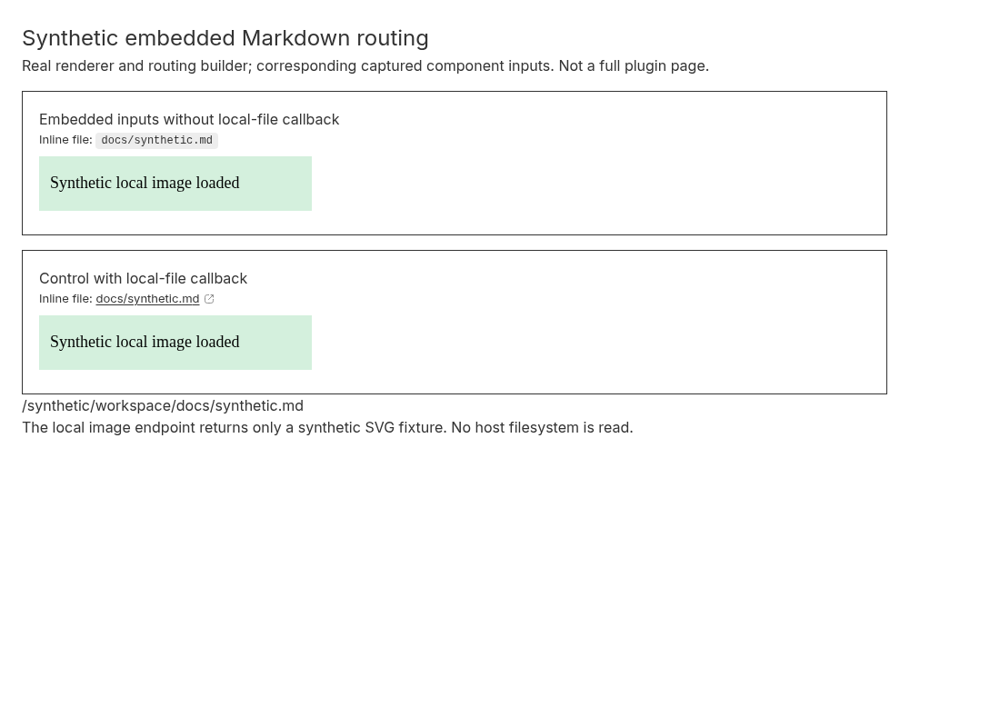

Embedded chat: local-file links fail, but other routing categories differ
2026-09-30 · Bug · Medium priority · Medium effort
PARTIALLY REPRODUCED · High confidence in tested callback and renderer behavior.
Scope and category results
The actual PluginThreadChat is mounted through its existing plugin-slot test harness outside a thread timeline navigation provider, using a synthetic thread/environment. The child EmbeddedThreadChat is mocked to capture its inputs; SDK data and subscriptions are mocked. A separate optimized browser fixture exercises the real MarkdownPreview and routing builder with corresponding captured inputs. The same agent repeats both fixtures in a second clean checkout at the identical base.
| Category | Observed in both runs | Limit |
|---|---|---|
| Inline-code .md file | No localFile routing; inline path renders inert code. Control supplies local callback, renders a link, and click delivers /synthetic/workspace/docs/synthetic.md. | No actual file-preview pane or file read. |
| Workspace file mention | Actual embedded resolveMentionLink returns null for a synthetic workspace file resource. | Mention visual rendering and click not tested. |
| Thread mention | Actual embedded resolver returns a function; invoking it changes MemoryRouter to /projects/proj_target/threads/thr_target. | Does not test parsing/rendering/clicking an actual @thread mention pill or real app navigation. |
| Workspace-relative image | localImage routing exists. Real renderer requests the expected thread host-files URL; controlled endpoint returns an SVG and both images load at naturalWidth 300. | No real host-file service, filesystem resolution or original installed release tested. |
The broader claim that every category is inert is not established on this base. Image failure is not observed in the controlled renderer fixture, and the thread resolver works at the component boundary. These scoped controls do not prove the entire issue fixed. The reproduced inline-code path is distinct from #4438’s existing relative Markdown-anchor report; that report is preserved and its tests are not treated as coverage for these additional categories.
Expected, actual and root cause
Expected: a project-associated embedded message can open a workspace-local inline .md path through an available file handler. Actual: the captured environment workspace path is present, but the local-file callback is absent and the renderer keeps the span as plain code. Supplying the callback converts it to a link. The control replaces the code element with an anchor; the browser assertions inspect the actual anchor rather than assuming nested code markup.
Embedded chat reads the optional timeline navigation context and only inherits its host-file handler when the environment matches. Outside that context the callback is absent, although workspaceRootPath comes from the fetched environment. The routing builder creates localFile only when the callback exists. Inline-code Markdown rendering converts eligible paths only with that routing. In contrast, the embedded thread-mention resolver has its own navigation handler and local image routing depends on threadId, explaining the category differences observed.
Proposed fix: provide environment-aware host-file handling for embedded chat outside the parent timeline context, or expose explicit routing inputs through the supported API. Preserve the working thread resolver and image path; add tests per category, then verify full-page plugin integration. Do not remove environment ownership checks without ensuring the handler targets the embedded thread’s actual environment. No production fix or PR was created.
Trusted base and environment
Fetched public origin/main: 4195cf56febd44853463cd9eec518a172dd7654a. Linux x86_64, Node 24.19.0, pinned pnpm 9.15.0, Vitest 4.1.1, Vite 8.0.12 optimized fixture build; headless desktop Chromium 151.0.7922.173 at 1100×800. Both frozen installs and builds succeeded. Separate clean worktrees, node_modules/cache, browser profiles and loopback ports; shared dependency download store. No added dependency.
Repeatable steps
Save the inline regression patch outside each checkout. Save the three fixture files below under apps/app/issue4466/. Save serve.py and capture.mjs outside the checkout. Use pnpm 9.15.0. The commands retain executed flags with local work paths normalized. Run the local server and Chromium in separate terminals. The component test intentionally exits 1 at the expected localFile assertion; six existing tests pass. Browser capture exits 0 after checking the defect and controls.
git clone https://github.com/get-bb/bb.git first cd first git checkout --detach 4195cf56febd44853463cd9eec518a172dd7654a pnpm install --frozen-lockfile --store-dir ../dependency-store git apply ../regression.patch pnpm exec turbo run test --filter=@bb/app --force -- PluginThreadChat.test.tsx cd apps/app pnpm exec vite build --config issue4466/vite.config.ts python serve.py 49231 issue4466/dist chromium --headless --no-sandbox --disable-dev-shm-usage --disable-background-networking --remote-debugging-port=49232 --user-data-dir=../fresh-browser-first about:blank node capture.mjs 49232 49231 first-run # Repeat personally in a second clean checkout at the same SHA with fresh state. # Apply the same patch, install and build the same fixture source again. # Second HTTP/debugger ports: 49233/49234; separate browser profile. node capture.mjs 49234 49233 second-run
Complete component regression patch
diff --git a/apps/app/src/components/plugin/PluginThreadChat.test.tsx b/apps/app/src/components/plugin/PluginThreadChat.test.tsx
index 9943832e8..4c4cc3685 100644
--- a/apps/app/src/components/plugin/PluginThreadChat.test.tsx
+++ b/apps/app/src/components/plugin/PluginThreadChat.test.tsx
@@ -1,8 +1,9 @@
// @vitest-environment jsdom
+import { buildMarkdownMessageLinkRouting } from "../ui/markdown-message-link-routing";
import { LazyPluginThreadChat } from "./LazyPluginThreadChat";
-import { cleanup, render, screen, waitFor } from "@testing-library/react";
-import { MemoryRouter } from "react-router-dom";
+import { act, cleanup, render, screen, waitFor } from "@testing-library/react";
+import { MemoryRouter, useLocation } from "react-router-dom";
import {
beforeAll,
afterEach,
@@ -30,6 +31,7 @@ vi.mock("@/lib/sdk", () => ({
threads: { get: vi.fn() },
environments: { get: vi.fn() },
providers: { list: vi.fn(async () => []) },
+ hosts: { list: vi.fn(async () => []) },
},
BbHttpError: class BbHttpError extends Error {
status: number;
@@ -304,3 +306,24 @@ describe("PluginThreadChat", () => {
);
});
});
+
+
+function RoutingProbe(){return <div data-testid="route-probe">{useLocation().pathname}</div>;}
+it("4466 preserves each embedded routing category outside thread navigation context", async () => {
+ vi.mocked(sdk.threads.get).mockResolvedValue({...THREAD_FIXTURE,environmentId:"env_synthetic"} as never);
+ vi.mocked(sdk.environments.get).mockResolvedValue({id:"env_synthetic",environmentProviderId:null,path:"/synthetic/workspace",hostId:"host_synthetic"} as never);
+ const {wrapper:Wrapper}=createQueryClientTestHarness();
+ render(<Wrapper><MemoryRouter><PluginSlotMount pluginId="demo" slotKind="navPanel" slotId="page"><DemoPluginPage threadId="thr_demo"/></PluginSlotMount><RoutingProbe/></MemoryRouter></Wrapper>);
+ await waitFor(()=>expect(mocks.embeddedChatProps.at(-1)?.workspaceRootPath).toBe("/synthetic/workspace"));
+ const props=mocks.embeddedChatProps.at(-1)!;
+ const resolve=props.resolveMentionLink as (resource:unknown)=>(()=>void)|null;
+ const threadHandler=resolve({kind:"thread",threadId:"thr_target",projectId:"proj_target"});
+ expect(threadHandler).toBeTypeOf("function");
+ await act(async()=>threadHandler?.());
+ expect(screen.getByTestId("route-probe").textContent).toBe("/projects/proj_target/threads/thr_target");
+ const fileHandler=resolve({kind:"path",source:"workspace",entryKind:"file",path:"docs/synthetic.md",label:"synthetic"});
+ const routing=buildMarkdownMessageLinkRouting({threadId:"thr_demo",workspaceRootPath:String(props.workspaceRootPath),onOpenLocalFileLink:props.onOpenLocalFileLink as never,onOpenLink:props.onOpenLink as never});
+ expect(routing?.localImage).toBeTruthy();
+ console.log("ISSUE4466 "+JSON.stringify({workspaceRootPath:props.workspaceRootPath,localFileRouting:Boolean(routing?.localFile),workspaceMentionHandler:Boolean(fileHandler),threadMentionHandler:Boolean(threadHandler),threadNavigation:screen.getByTestId("route-probe").textContent,localImageRouting:Boolean(routing?.localImage)}));
+ expect(routing?.localFile).toBeTruthy();
+});
apps/app/issue4466/index.html
<!doctype html><html><head><meta charset="utf-8"><title>4466 synthetic routing</title></head><body><div id="root"></div><script type="module" src="/main.tsx"></script></body></html>
apps/app/issue4466/main.tsx
import {useState} from "react";
import {createRoot} from "react-dom/client";
import {MemoryRouter} from "react-router-dom";
import {MarkdownPreview} from "../src/components/ui/markdown-preview";
import {buildMarkdownMessageLinkRouting} from "../src/components/ui/markdown-message-link-routing";
import "../src/app.css";
function App(){const[opened,setOpened]=useState("none");const shared={threadId:"thr_demo",workspaceRootPath:"/synthetic/workspace"};const content="Inline file: `docs/synthetic.md`\n\n";
return <main style={{padding:24,maxWidth:1000}}><h1 style={{fontSize:24}}>Synthetic embedded Markdown routing</h1><p>Real renderer and routing builder; corresponding captured component inputs. Not a full plugin page.</p>
<section id="missing" style={{padding:18,border:"1px solid",marginTop:16}}><h2>Embedded inputs without local-file callback</h2><MarkdownPreview content={content} linkRouting={buildMarkdownMessageLinkRouting(shared)}/></section>
<section id="control" style={{padding:18,border:"1px solid",marginTop:16}}><h2>Control with local-file callback</h2><MarkdownPreview content={content} linkRouting={buildMarkdownMessageLinkRouting({...shared,onOpenLocalFileLink:link=>{setOpened(link.path);return true;}})}/></section><p id="opened">{opened}</p><p>The local image endpoint returns only a synthetic SVG fixture. No host filesystem is read.</p></main>}
createRoot(document.getElementById("root")!).render(<MemoryRouter><App/></MemoryRouter>);
apps/app/issue4466/vite.config.ts
import { defineConfig } from "vite";
import { sharedViteConfig } from "../vite.config";
export default defineConfig({ ...sharedViteConfig, root: __dirname, plugins: sharedViteConfig.plugins.filter(plugin => !["bb:font-preload", "bb:split-prefetch"].includes(plugin.name)), build: { ...sharedViteConfig.build, outDir: "dist", emptyOutDir: true } });
serve.py
from http.server import ThreadingHTTPServer,SimpleHTTPRequestHandler
from urllib.parse import urlsplit,parse_qs
import sys,json
class Handler(SimpleHTTPRequestHandler):
def do_GET(self):
u=urlsplit(self.path)
if u.path=="/api/v1/threads/thr_demo/host-files/content" and parse_qs(u.query).get("path")==["/synthetic/workspace/images/synthetic.svg"]:
data=b'<svg xmlns="http://www.w3.org/2000/svg" width="300" height="60"><rect width="300" height="60" fill="#d4f0dd"/><text x="12" y="35" font-size="18">Synthetic local image loaded</text></svg>'
self.send_response(200);self.send_header("Content-Type","image/svg+xml");self.send_header("Content-Length",str(len(data)));self.end_headers();self.wfile.write(data);print(json.dumps({"syntheticImageRequest":self.path}),flush=True);return
super().do_GET()
import os
os.chdir(sys.argv[2]);ThreadingHTTPServer(("127.0.0.1",int(sys.argv[1])),Handler).serve_forever()
capture.mjs
import { writeFile } from 'node:fs/promises';
const [debugPort,appPort,output]=process.argv.slice(2);
const tabs=await(await fetch(`http://127.0.0.1:${debugPort}/json/list`)).json();
const ws=new WebSocket(tabs.find(t=>t.type==='page').webSocketDebuggerUrl);
await new Promise(r=>ws.addEventListener('open',r,{once:true}));let id=0;const pending=new Map();
ws.addEventListener('message',event=>{const x=JSON.parse(event.data);if(x.id){const p=pending.get(x.id);pending.delete(x.id);x.error?p.reject(new Error(JSON.stringify(x.error))):p.resolve(x.result);}});
const call=(method,params={})=>new Promise((resolve,reject)=>{const serial=++id;pending.set(serial,{resolve,reject});ws.send(JSON.stringify({id:serial,method,params}));});
const evaluate=async expression=>{const x=await call('Runtime.evaluate',{expression,returnByValue:true,awaitPromise:true});if(x.exceptionDetails)throw new Error(JSON.stringify(x.exceptionDetails));return x.result.value;};
await call('Page.enable');await call('Runtime.enable');await call('Network.enable');await call('Network.setCacheDisabled',{cacheDisabled:true});
await call('Emulation.setDeviceMetricsOverride',{width:1100,height:800,deviceScaleFactor:1,mobile:false});
const errors=[];
ws.addEventListener('message',event=>{const x=JSON.parse(event.data);if(x.method==='Runtime.exceptionThrown')errors.push(x.params.exceptionDetails.text+': '+(x.params.exceptionDetails.exception?.description??''));});
await call('Page.navigate',{url:`http://127.0.0.1:${appPort}/`});
await new Promise(r=>setTimeout(r,2500));
const before=await evaluate(`(()=>{const inspect=id=>{const s=document.getElementById(id);const c=[...s.querySelectorAll('code')].find(x=>x.textContent==='docs/synthetic.md');return {codeFound:Boolean(c),clickable:[...s.querySelectorAll('a,button')].some(x=>x.textContent.includes('docs/synthetic.md')),images:[...s.querySelectorAll('img')].map(i=>({src:i.getAttribute('src'),complete:i.complete,naturalWidth:i.naturalWidth}))};};return {missing:inspect('missing'),control:inspect('control')};})()`);
if(!before.missing.codeFound||before.missing.clickable||!before.control.clickable)throw new Error(JSON.stringify(before));
if(![...before.missing.images,...before.control.images].every(i=>i.complete&&i.naturalWidth>0)||before.missing.images.length!==1||before.control.images.length!==1)throw new Error('Image failed '+JSON.stringify(before));
await evaluate(`(()=>{const c=[...document.querySelectorAll('#control a,#control button')].find(x=>x.textContent.includes('docs/synthetic.md'));c.click();})()`);
await new Promise(r=>setTimeout(r,100));
const opened=await evaluate('document.getElementById("opened").textContent');if(opened!=='/synthetic/workspace/docs/synthetic.md')throw new Error(opened);
if(errors.length)throw new Error(JSON.stringify(errors));
const screenshot=await call('Page.captureScreenshot',{format:'png',captureBeyondViewport:false});await writeFile(output+'.png',Buffer.from(screenshot.data,'base64'));
const result={before,opened,browser:await call('Browser.getVersion'),viewport:{width:1100,height:800},errors};await writeFile(output+'.json',JSON.stringify(result,null,2));console.log(JSON.stringify(result));ws.close();
Same-agent second clean reproduction: actual evidence
Both component runs emit the same category results, with one expected local-file failure and six passed controls. Both browser runs show inert code in the missing-callback case, a clickable control that supplies the resolved path, and two loaded synthetic images with no runtime exception. Both genuine screenshots were inspected. This is the same agent’s second clean reproduction, not independent verification.
first component output
@bb/app:test: ISSUE4466 {"workspaceRootPath":"/synthetic/workspace","localFileRouting":false,"workspaceMentionHandler":false,"threadMentionHandler":true,"threadNavigation":"/projects/proj_target/threads/thr_target","localImageRouting":true}
@bb/app:test: ⎯⎯⎯⎯⎯⎯⎯ Failed Tests 1 ⎯⎯⎯⎯⎯⎯⎯
@bb/app:test: AssertionError: expected undefined to be truthy
@bb/app:test: Test Files 1 failed (1)
@bb/app:test: Tests 1 failed | 6 passed (7)
@bb/app:test: Duration 7.22s (transform 4.11s, setup 256ms, import 5.96s, tests 210ms, environment 620ms)
first actual browser observations
{
"before": {
"missing": {
"codeFound": true,
"clickable": false,
"images": [
{
"src": "/api/v1/threads/thr_demo/host-files/content?path=%2Fsynthetic%2Fworkspace%2Fimages%2Fsynthetic.svg",
"complete": true,
"naturalWidth": 300
}
]
},
"control": {
"codeFound": false,
"clickable": true,
"images": [
{
"src": "/api/v1/threads/thr_demo/host-files/content?path=%2Fsynthetic%2Fworkspace%2Fimages%2Fsynthetic.svg",
"complete": true,
"naturalWidth": 300
}
]
}
},
"opened": "/synthetic/workspace/docs/synthetic.md",
"browser": {
"protocolVersion": "1.3",
"product": "Chrome/151.0.7922.173",
"revision": "@a96602f30358e9b5d256a0464e7e4d4bec223004",
"userAgent": "Mozilla/5.0 (X11; Linux x86_64) AppleWebKit/537.36 (KHTML, like Gecko) HeadlessChrome/151.0.0.0 Safari/537.36",
"jsVersion": "15.1.206.23"
},
"viewport": {
"width": 1100,
"height": 800
},
"errors": []
}

second component output
@bb/app:test: ISSUE4466 {"workspaceRootPath":"/synthetic/workspace","localFileRouting":false,"workspaceMentionHandler":false,"threadMentionHandler":true,"threadNavigation":"/projects/proj_target/threads/thr_target","localImageRouting":true}
@bb/app:test: ⎯⎯⎯⎯⎯⎯⎯ Failed Tests 1 ⎯⎯⎯⎯⎯⎯⎯
@bb/app:test: AssertionError: expected undefined to be truthy
@bb/app:test: Test Files 1 failed (1)
@bb/app:test: Tests 1 failed | 6 passed (7)
@bb/app:test: Duration 5.57s (transform 3.06s, setup 485ms, import 4.13s, tests 174ms, environment 597ms)
second actual browser observations
{
"before": {
"missing": {
"codeFound": true,
"clickable": false,
"images": [
{
"src": "/api/v1/threads/thr_demo/host-files/content?path=%2Fsynthetic%2Fworkspace%2Fimages%2Fsynthetic.svg",
"complete": true,
"naturalWidth": 300
}
]
},
"control": {
"codeFound": false,
"clickable": true,
"images": [
{
"src": "/api/v1/threads/thr_demo/host-files/content?path=%2Fsynthetic%2Fworkspace%2Fimages%2Fsynthetic.svg",
"complete": true,
"naturalWidth": 300
}
]
}
},
"opened": "/synthetic/workspace/docs/synthetic.md",
"browser": {
"protocolVersion": "1.3",
"product": "Chrome/151.0.7922.173",
"revision": "@a96602f30358e9b5d256a0464e7e4d4bec223004",
"userAgent": "Mozilla/5.0 (X11; Linux x86_64) AppleWebKit/537.36 (KHTML, like Gecko) HeadlessChrome/151.0.0.0 Safari/537.36",
"jsVersion": "15.1.206.23"
},
"viewport": {
"width": 1100,
"height": 800
},
"errors": []
}

Remaining limits and trust boundary
No full-page third-party plugin, desktop application, app-panel integration or real file-preview/host service was executed. The component harness uses its existing compact plugin slot; the browser displays isolated renderer inputs, not an entire ThreadChat. Thread-mention pill behavior remains unverified. The image server only recognizes the exact synthetic URL and serves fixed SVG bytes; it does not resolve arbitrary paths. No conclusion is drawn about original macOS 0.44.0 behavior.
An initial browser assertion expected a code element inside the control link; source inspection showed that the renderer replaces it with an anchor. The selector was corrected before the two retained final browser captures; production code was unchanged. Issue commands, external plugin links and supplied snippets were untrusted claims only and were not executed or fetched. No real user runtime, credentials or files were accessed. Existing reports and prior blockers are preserved.